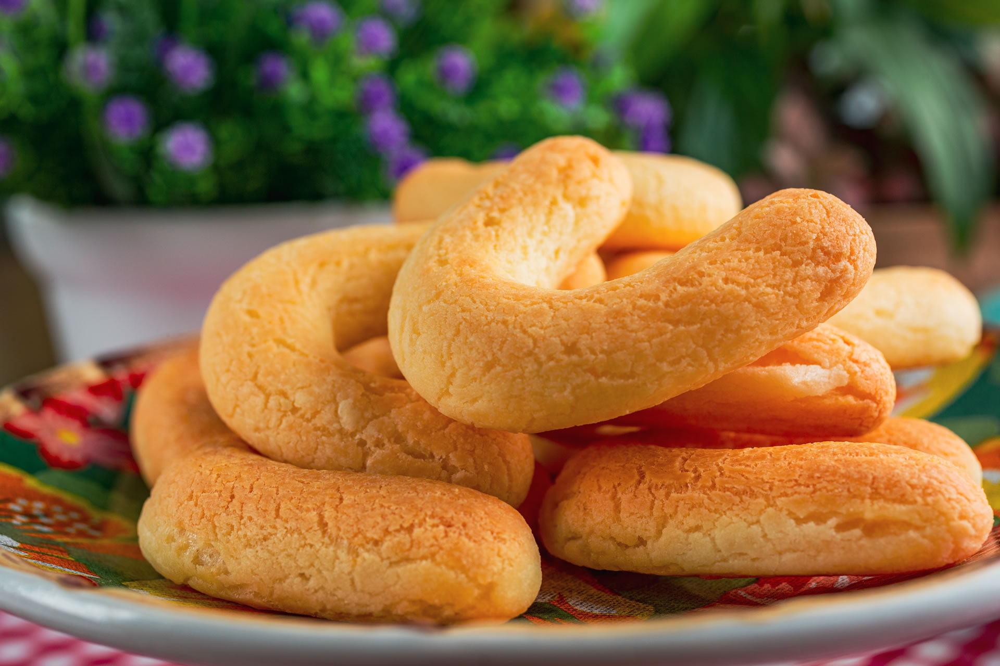

Ver Tabela NutricionalTambém comumente chamado de chipa paraguaia, o nosso biscoito de queijo tem uma textura ímpar. Feito com queijo vindo diretamente de Araxá, vem provocando uma experiência gastronômica única, digna de ser compartilhada com os apreciadores desta iguaria mineira tradicional.


Pão de queijo delicioso! Sabor de queijo de verdade! Os recheados são indescritíveis também! Todo mundo que prova quer mais!!!
Pão de queijo de excelente qualidade, com ingredientes autênticos, ovo de verdade, queijo de verdade! Aprovado por mim e por toda a minha família! Recomendamos fortemente!
O produto é de alta qualidade. Embalado adequadamente. A entrega é pontual. A comunicação com a responsável é totalmente eficaz. Adoro os produtos e levo sempre para amigos.
O Pão de Queijo mais saboroso que eu, minhas filhas e amigos já comemos. Além de sabor tem qualidade e muito amor nos responsáveis por sua fabricação.
Uma experiência maravilhosa! O Pão de queijo da Dona Cuca é um "Manjar dos Deuses"! Simples assim!
Excelente, pães de queijo deliciosos e ambiente super agradável e acolhedor. Nota 1000!!!!
Pão de queijo de verdade!!! Simplesmente maravilhoso! Sabores sazonais sempre surpreendem!
Uma delícia!!!! Pão de queijo artesanal com ingredientes de qualidade.